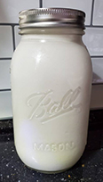
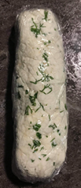
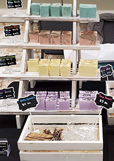

Goat Milk
We have goat milk available seasonally, usually beginning in the spring once kids start arriving and ending in the winter when we dry up our does in preparation for next year's kidding season. One of our goals for the future is to stagger our breedings so we have fresh milk available year round!
Goat Cheese
We love making fresh goat cheese and hope to be able to sell it in the future! Some of our favorite toppings include fresh herbs, garlic, or honey.
Goat Milk Soap & Bath Products
In our free time we enjoy making homemade soap and bath bombs! Some of our scents include:
- Bergamot Black Tea
- A fresh and uplifting scent that has notes of bergamot, lime, earl grey tea leaves, cucumber, beeswax, amber, and musk.
- Bramble Berry
- A sweet mix of bergamot, blackberry, raspberry, peony, honeysuckle, and violet leaf. Notes of white woods, golden amber, and musk add complexity and depth.
- Cashmere
- A mix of blueberry, white freesia, wild grape, pomegranate, lily, magnolia, green vines, cashmere, and violet.
- Coconut Cream
- A crowd pleaser with notes of sweet coconut, vanilla, almond, papaya, and cocoa.
- Coconut Lime Verbena
- A tropical citrusy type with irresistible fresh notes of lime and coconut.
- Cotton Candy
- Smells just like the real thing.
- Fresh Mango
- A fresh mix of citrus, mango, peach, and musk.
- Lavender
- A fresh, peaceful lavender scent.
- Lush Succulent
- A fresh and green mix of cucumber, vetiver, grass, honey, bamboo, geranium, sage, patchouli, oakmoss, and sandalwood.
- Oatmeal Milk & Honey
- A creamy and comforting scent.
- Pumpkin Souffle
- A mix of walnut, pecan, espresso, freshly-cooked pumpkin, caramel, ginger, cinnamon, and allspice.
- Rose Gold
- A sweet and soft mix of coconut, candy apple, raspberry, red currant, tulip, freesia, heliotrope, rose, cashmere, musk, vanilla, and amber.
- Shave and a Haircut
- A ¬¬mix of lemon, bergamot, cool mint, lavender, green accord, sandalwood, cedarwood, amber, and musk. It smells just like walking into a barbershop.
- Spearmint Eucalyptus
- A refreshing mix of eucalyptus, spearmint, lavender, citrus, and a touch of marigold. It's inspired by the Eucalyptus and Spearmint fragrance from Bath and Body Works.
- Tobacco and Bay Leaf
- A fresh mix of bay leaf, fir needle, cedarwood, bergamot, and tobacco.
- Turkish Mocha
- A sweet mix of milk, cardamom, cocoa, nutmeg, vanilla, honey, and Turkish coffee.